Проект "Мой виртуальный питомец"
Цель: Создать простое приложение с виртуальным питомцем, используя несколько экранов.
В этом проекте вы научитесь создавать приложение с несколькими экранами и переключаться между ними при помощи кнопок.
Чему ты научишься:
- Создавать многоэкранные приложения
- Переключаться между экранами
- Работать с изображениями
1
Подготовка ресурсов
2
Создание главного экрана
3
Создание дополнительных экранов
4
Программирование и тестирование
Шаг 1: Подготовка ресурсов
- Откройте MIT App Inventor и создайте новый проект с названием "VirtualPet".
-
Для этого проекта нам понадобятся следующие ресурсы:
- Изображение питомца в обычном состоянии - основное изображение для главного экрана
- Изображение питомца во время еды - для экрана кормления
- Изображение спящего питомца - для экрана сна
-
Скачайте необходимые ресурсы из нашего
центра загрузок
в разделе "Ресурсы и материалы".
- Найдите и скачайте ZIP-архив "pet_resources.zip", в котором содержатся все необходимые файлы для проекта
- Распакуйте архив - внутри вы найдёте файлы изображений: "pet_happy.png", "pet_eating.png" и "pet_sleeping.png"
- Теперь эти файлы готовы для загрузки в ваш проект MIT App Inventor
-
Загрузите скачанные файлы в ваш проект MIT App Inventor:
- В правой панели "Media" (Медиа) нажмите кнопку "Upload File..." (Загрузить файл...)
- Выберите и загрузите сначала файл "pet_happy.png"
- Повторите процесс для файлов "pet_eating.png" и "pet_sleeping.png"
- После загрузки вы увидите все файлы в списке медиа-ресурсов вашего проекта.


Совет: Если у вас нет возможности скачать
ресурсы, вы можете использовать любые подходящие изображения
питомца. Выбирайте изображения с прозрачным фоном (PNG), чтобы
питомец выглядел аккуратно на любом фоне экрана.
Важно: Убедитесь, что имена загруженных файлов
совпадают с именами, которые будут использоваться в проекте
(pet_happy.png, pet_eating.png и pet_sleeping.png). Если имена
файлов отличаются, вам нужно будет соответствующим образом
изменить их при настройке компонентов.
Шаг 2: Создание главного экрана
-
Настройте первый экран приложения:
- В разделе Properties найдите свойство BackgroundColor экрана и выберите светлый цвет (например, светло-голубой).
- В разделе Properties найдите свойство Title и установите его значение в "Мой виртуальный питомец".
-
Создайте заголовок приложения:
- Из палитры User Interface перетащите компонент Label в верхнюю часть экрана.
-
Настройте свойства:
• Text: "Мой питомец"
• FontSize: 24
• FontBold: True
• TextAlignment: Center
• Width: Fill parent
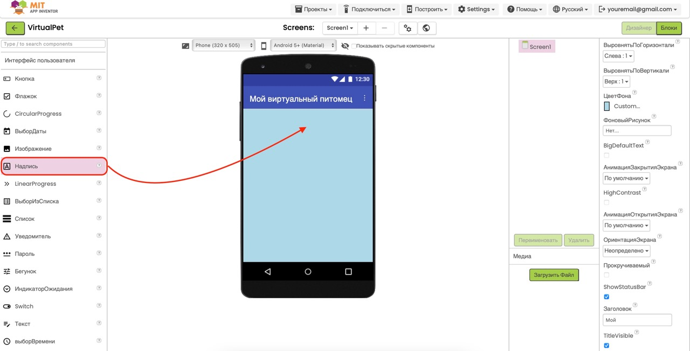
-
Добавьте изображение питомца:
- Из палитры User Interface перетащите компонент Image под заголовок.
-
Настройте свойства:
• Picture: выберите загруженное изображение "pet_happy.png"
• Width: 200 пикселей
• Height: 200 пикселей
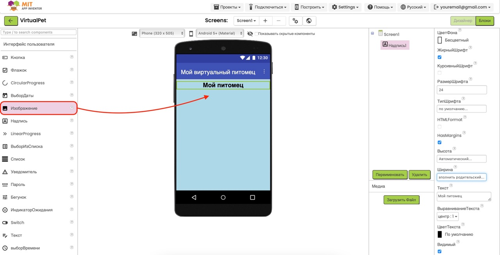
-
Добавьте кнопки для действий:
- Из палитры Layout перетащите компонент VerticalArrangement под изображение. 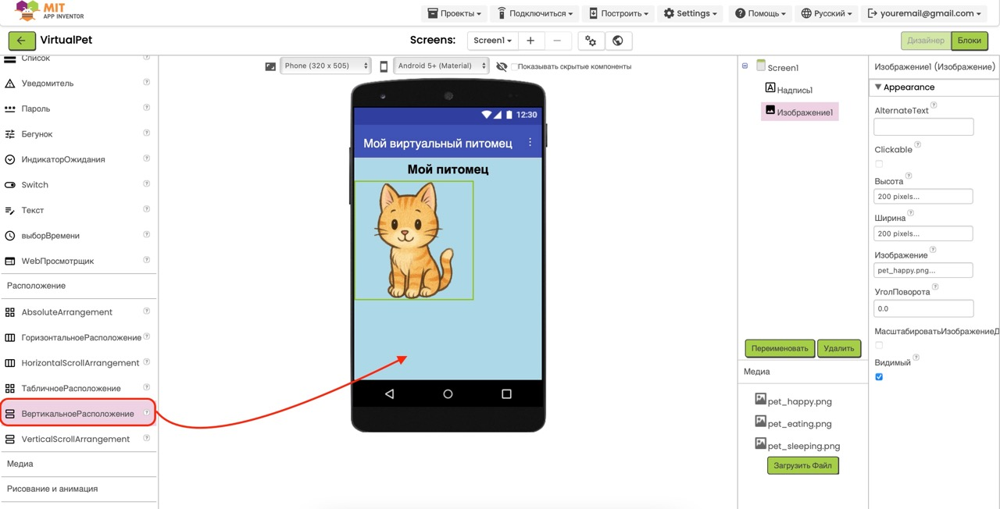
-
Настройте свойства:
• Width: Fill parent
• AlignHorizontal: Center -
Внутри VerticalArrangement добавьте две кнопки:
Первая кнопка:
• Text: "Покормить"
• BackgroundColor: Оранжевый
• FontBold: True
• Width: 150 пикселей
Вторая кнопка:
• Text: "Уложить спать"
• BackgroundColor: Синий
• FontBold: True
• Width: 150 пикселей
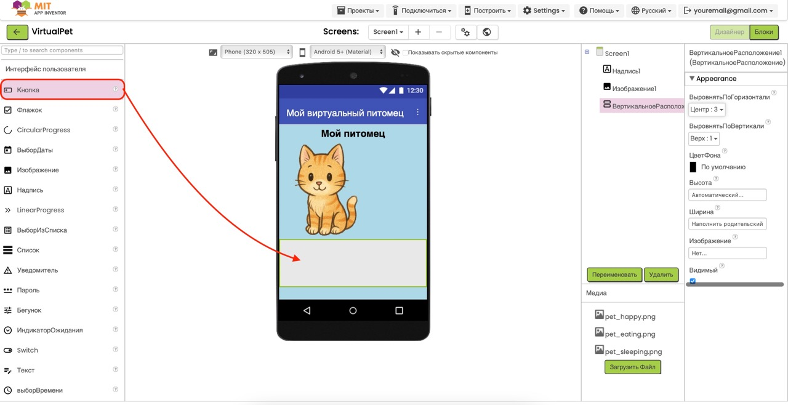
Совет: Чтобы сделать интерфейс более аккуратным,
добавьте пространство между элементами. Для этого между
компонентами можно добавить пустые компоненты
Label с небольшой высотой или настроить отступы в
свойстве Margin.
Шаг 3: Создание дополнительных экранов
-
Создание экрана кормления:
- В верхнем меню выберите Add Screen... и создайте новый экран с названием "FeedScreen". 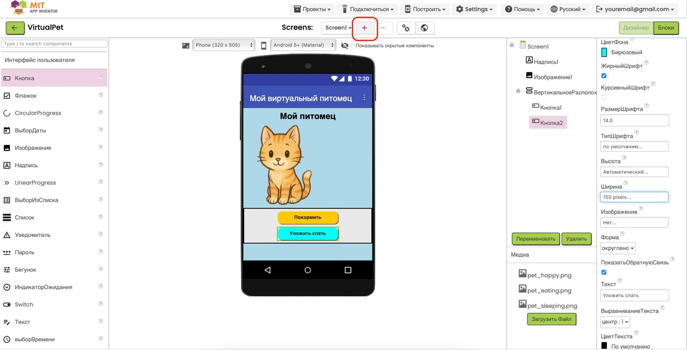
- В разделе Properties найдите свойство Title и установите его значение в "Кормление питомца".
- В разделе Properties найдите свойство BackgroundColor и выберите светло-оранжевый цвет.
-
Настройте экран кормления:
-
Добавьте заголовок:
• Из палитры User Interface перетащите компонент Label
• Text: "Покормить питомца"
• FontSize: 24
• FontBold: True
• TextAlignment: Center
• Width: Fill parent -
Добавьте изображение питомца, который ест:
• Добавьте компонент Image под заголовок
• Picture: выберите загруженное изображение "pet_eating.png"
• Width: 200 пикселей
• Height: 200 пикселей
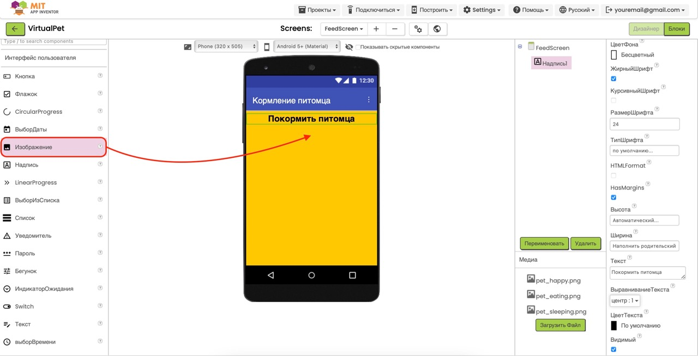
-
Добавьте заголовок:
-
Добавьте варианты еды (для визуального оформления):
- Из палитры Layout перетащите компонент HorizontalArrangement под изображение. 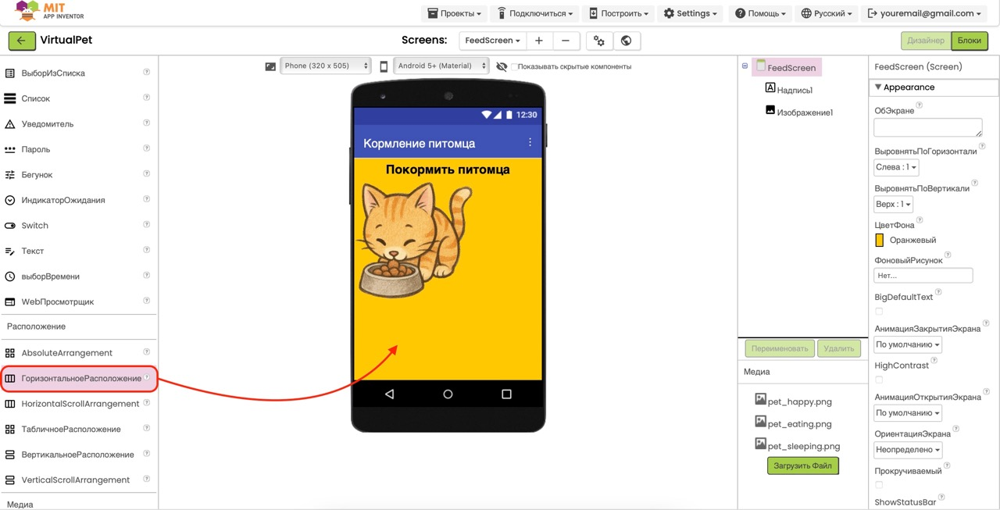
-
Настройте свойства:
• Width: Fill parent
• AlignHorizontal: Center - Внутри HorizontalArrangement добавьте три кнопки с названиями разных типов еды (например, "Морковка 🥕", "Яблоко 🍎", "Лакомство 🍪").
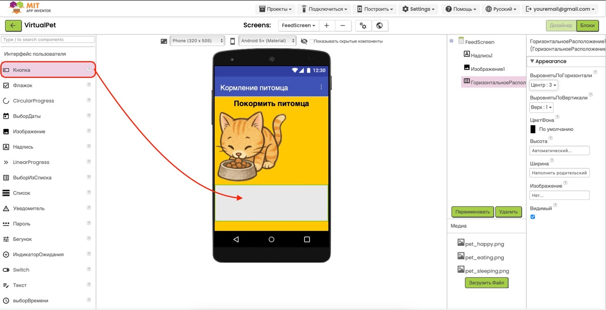
-
Добавьте кнопку возврата на главный экран:
- Из палитры User Interface перетащите компонент Button в нижнюю часть экрана. 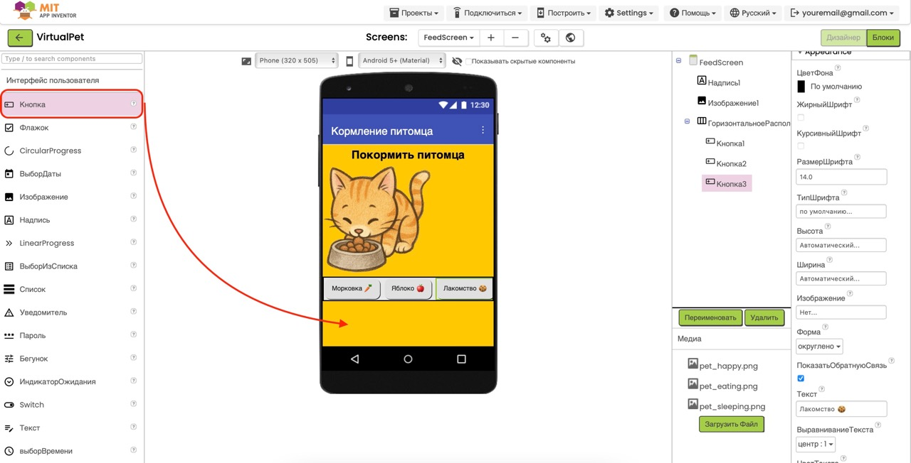
-
Настройте свойства:
• Text: "Вернуться к питомцу"
• FontBold: True
• Width: Fill parent
-
Создание экрана сна:
- В верхнем меню выберите Add Screen... и создайте новый экран с названием "SleepScreen". 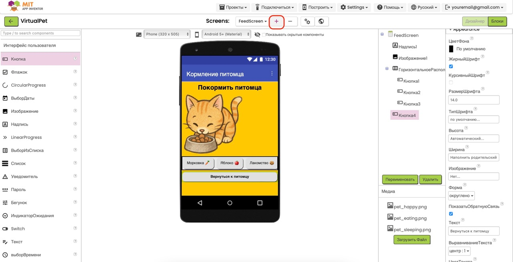
- В разделе Properties найдите свойство Title и установите его значение в "Сон питомца".
- В разделе Properties найдите свойство BackgroundColor и выберите тёмно-синий цвет, чтобы создать эффект ночи.
-
Настройте экран сна:
-
Добавьте заголовок:
• Из палитры User Interface перетащите компонент Label
• Text: "Питомец спит"
• FontSize: 24
• FontBold: True
• TextAlignment: Center
• Width: Fill parent
• TextColor: White (чтобы текст был виден на тёмном фоне) -
Добавьте изображение спящего питомца:
• Добавьте компонент Image под заголовок
• Picture: выберите загруженное изображение "pet_sleeping.png"
• Width: 200 пикселей
• Height: 200 пикселей
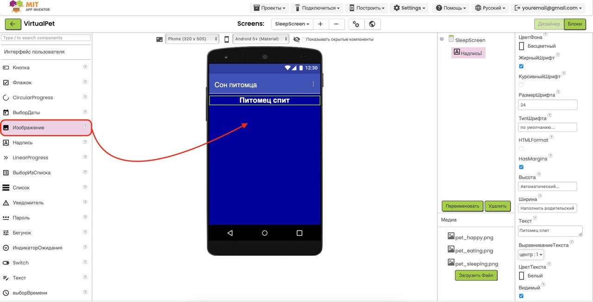
-
Добавьте декоративный элемент:
• Из палитры User Interface перетащите компонент Label
• Text: "💤 Zzzz... 💤"
• FontSize: 20
• TextAlignment: Right
• Width: Fill parent
• TextColor: White
 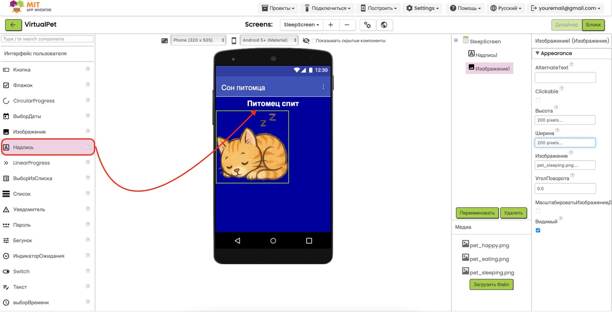
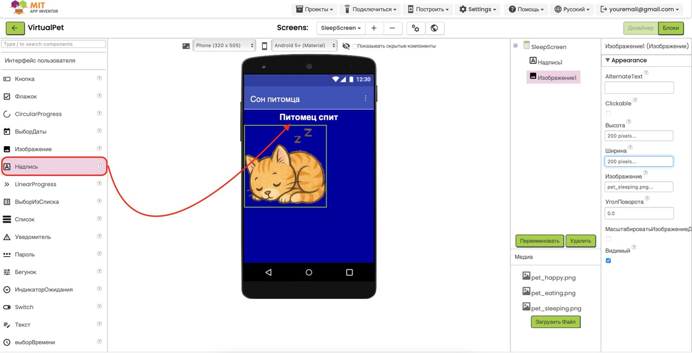
-
Добавьте заголовок:
-
Добавьте кнопку возврата на главный экран:
- Из палитры User Interface перетащите компонент Button в нижнюю часть экрана.
-
Настройте свойства:
• Text: "Вернуться к питомцу"
• FontBold: True
• Width: Fill parent
- 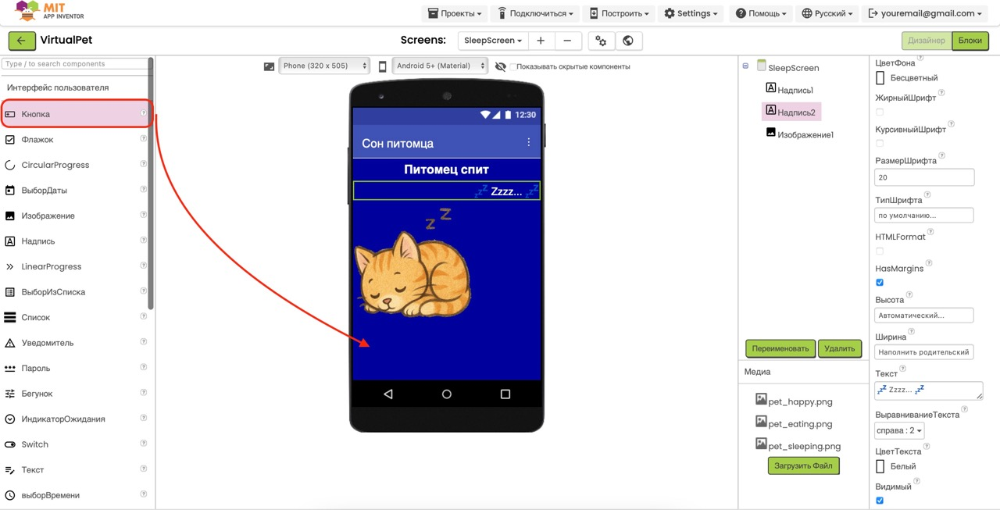
Важно: Не забудьте добавить кнопки возврата на
главный экран на обоих дополнительных экранах. Без них
пользователь не сможет вернуться к своему питомцу!
Шаг 4: Программирование и тестирование
-
Переключитесь на вкладку Blocks (Блоки):
Нажмите на кнопку "Blocks" в правом верхнем углу экрана. -
Программирование кнопки "Покормить":
- Перейдите к экрану Screen1 (в выпадающем списке экранов).
- В списке компонентов найдите Button1.
- Добавьте блок when Button1.Click do
- Внутри этого блока добавьте блок open another screen screenName (из раздела Управление)
- В качестве параметра screenName укажите "FeedScreen"
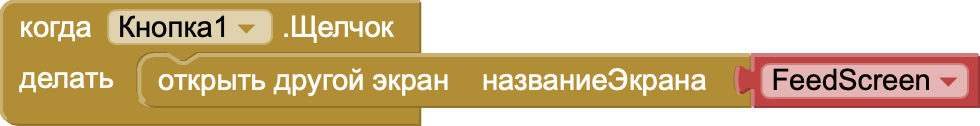
-
Программирование кнопки "Уложить спать":
- В списке компонентов Screen1 найдите Button2.
- Добавьте блок when Button2.Click do
- Внутри этого блока добавьте блок open another screen screenName
- В качестве параметра screenName укажите "SleepScreen"
-
Программирование кнопки возврата с экрана кормления:
- Выберите экран FeedScreen в выпадающем списке.
- В списке компонентов найдите Button4.
- Добавьте блок when Button4.Click do
- Внутри этого блока добавьте блок open another screen screenName с параметром "Screen1"
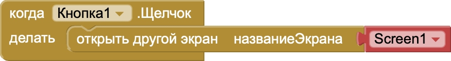
-
Программирование кнопки возврата с экрана сна:
- Выберите экран SleepScreen в выпадающем списке.
- В списке компонентов найдите Button1.
- Добавьте блок when Button1.Click do
- Внутри этого блока добавьте блок open another screen screenName с параметром "Screen1"
-
Протестируйте ваше приложение:
Чтобы увидеть ваше приложение в действии, воспользуйтесь руководством по тестированию приложений в нашем введении в MIT App Inventor. -
Проверьте работу приложения:
- Убедитесь, что все три экрана отображаются корректно
- Проверьте, что кнопка "Покормить" открывает экран кормления
- Проверьте, что кнопка "Уложить спать" открывает экран сна
- Проверьте, что кнопки "Вернуться к питомцу" на обоих дополнительных экранах корректно возвращают на главный экран


Поздравляем! Вы успешно создали приложение "Мой
виртуальный питомец" с несколькими экранами! Теперь вы знаете
основы создания многоэкранных приложений в MIT App Inventor.
Идеи для улучшения: Вы можете расширить
функциональность вашего приложения:
- Добавить звуковые эффекты при переходе между экранами
- Добавить анимацию питомца с помощью нескольких изображений
- Создать экран с играми для питомца
- Добавить возможность выбирать разных питомцев
Скачать проект
Если у вас возникли сложности, вы можете скачать готовый файл проекта в нашем центре загрузок:
Перейти в центр загрузок